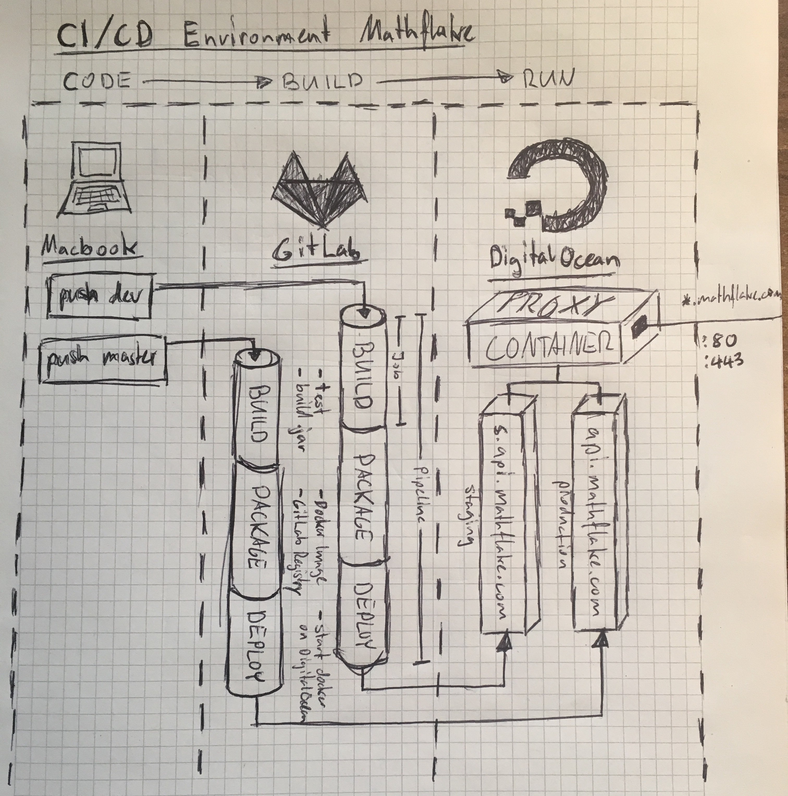
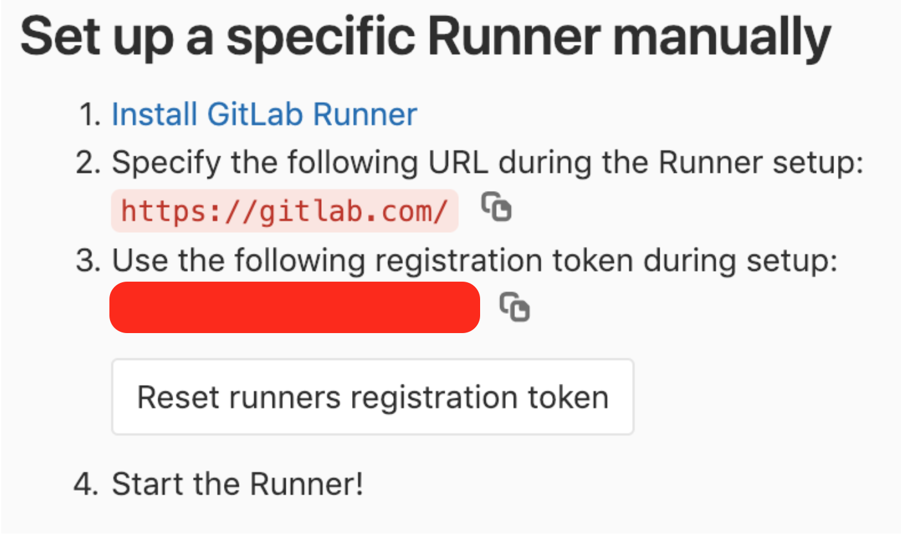
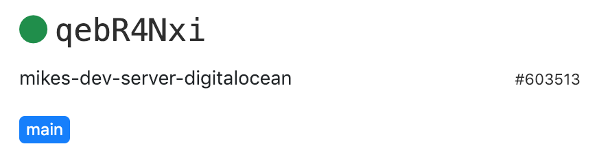
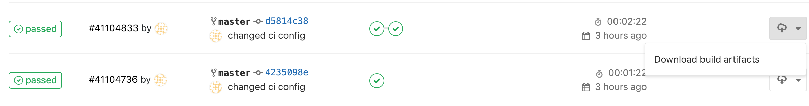
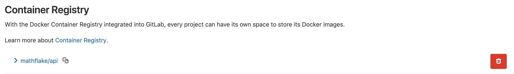
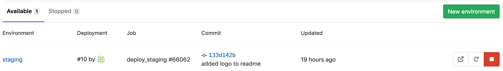

In this post I’ll tell you how to setup a CI/CD Environment with GitLab. The steps are explained using a Java Spring Boot Application.
Some instructions may vary depending on the technology and tools you use. Nevertheless the pattern stays the same for every CI / CD Environment: Build, test, package and deploy your code to staging / production systems. I’m gonna use Gradle to build & test my code and Docker to package & deploy it on my DigitalOcean server.
After this tutorial you will be able to automatically test and deploy your application by just pushing to your GitLab repository. Let’s have a look at what we’re building:

Prerequisites:
Steps:
If you work on the official gitlab.com you can also make use of the Shared Runners provided by GitLab and skip section 1. Nevertheless it’s worth thinking about configuring a custom GitLab Runner due to security reasons (because all commands in .gitlab-ci.yml will be executed on the runner, so you should be careful about sensitive data). Furthermore execution time is limited on GitLab’s Shared Runners.
GitLab Runners are designed to run your CI / CD Jobs. To make good use of CI / CD, the runner should always be up and running (otherwise Jobs won’t be processed). I have configured my Runner on a DigitalOcean Server. It’s up to you where you configure the runner, the only condition is to have internet access (the runner must communicate with GitLab).
Install the GitLab Runner according to these instructions.
Next we need to register the runner in order to connect it to our GitLab Project. On your GitLab Project go to Settings → CI / CD → Runners. You’ll need the URL and the token.

To register the runner, run this in your Server’s Shell (replace REGISTRATION_TOKEN with your token):
sudo gitlab-runner register -n \ --url https://gitlab.com/ \ --registration-token REGISTRATION_TOKEN \ --executor docker \ --description "My Docker Runner" \ --docker-image "docker:stable" \ --docker-privileged
It’s important to have the docker-privileged option since we want to use docker in docker to package our app as a docker image.
Your Runner should be up and running! Check your CI /CD Settings Page:

GitLab CI / CD works pretty simple: As soon as there is a .gitlab-ci.yml file checked into your Repository, GitLab will run the Jobs configured in this file every time you make a commit. Common Jobs are test, build, deploy_staging or deploy_production. But it’s completely up to you, how you name a job and what you gonna do within the Job.
For now we want achieve the Following with GitLab CI / CD:
This can be achieved by creating a .gitlab-ci.yml file in the project root of your Spring Boot Application with the following content:
image: docker:latest
services:
- docker:dind
stages:
- build
- package
- deploy
build:
image: gradle:5.0-jdk8-alpine
stage: build
script:
- gradle build
artifacts:
paths:
- build/libs/*.jar
package:
stage: package
script:
- docker build -t registry.gitlab.com/mathflake/api .
- docker login -u gitlab-ci-token -p $CI_BUILD_TOKEN registry.gitlab.com
- docker push registry.gitlab.com/mathflake/api
deploy_staging:
stage: deploy
script:
- apk upgrade && apk update
- apk add openssh-client
- apk add sshpass
- sshpass -p "$STAGING_SERVER_PASSWORD" ssh -o StrictHostKeyChecking=no $STAGING_SERVER_USER@$STAGING_SERVER docker login -u gitlab-ci-token -p $CI_BUILD_TOKEN registry.gitlab.com
- sshpass -p "$STAGING_SERVER_PASSWORD" ssh -o StrictHostKeyChecking=no $STAGING_SERVER_USER@$STAGING_SERVER docker pull registry.gitlab.com/mathflake/api
- sshpass -p "$STAGING_SERVER_PASSWORD" ssh -o StrictHostKeyChecking=no $STAGING_SERVER_USER@$STAGING_SERVER "docker container stop mathflake_api && docker container rm mathflake_api || true"
- sshpass -p "$STAGING_SERVER_PASSWORD" ssh -o StrictHostKeyChecking=no $STAGING_SERVER_USER@$STAGING_SERVER docker run --name mathflake_api -p 80:80 -d registry.gitlab.com/mathflake/api
environment:
name: staging
url: https://mathflake.com
only:
- developDon’t get confused by deploy_staging section, it contains many variables and duplicate commands. Let’s break it into pieces for further explanation.
image: docker:latest services: - docker:dind
image: Our GitLab Runner is configured to execute jobs using docker. This means a docker container will be created for every job, running all commands completely isolated from the OS. We tell the Executor to use the latest docker image from Dockerhub as base image. This ensures that docker is installed within the docker container which might sound weird in the first place but is important for later packaging.
services: Since Docker was not built to run inside a docker container we need to add the dind service.
stages: - build - package - deploy
Stages define the order of job execution. They will be processed sequentially from top to bottom (build → package → deploy). Multiple jobs assigned to the same stage will be processed in parallel (e.g. if you want to build several .jars in different flavors).
build:
image: gradle:5.0-jdk8-alpine
stage: build
script:
- gradle build
artifacts:
paths:
- build/libs/*.jarbuild: This is our first job called build.
image: Since we want to build with gradle we change the default image for this job to gradle:5.0-jdk8-alpine which comes with gradle preinstalled.
stage: The job will be assigned to the build stage which means it will run first.
script: The script section lists all shell commands that should be executed within the docker container. By default you will be placed into a folder with your repository checked out on the same level (you can further investigate by running commands like pwd or ls -la). STDOUT of all commands will later appear on the job’s detail page on GitLab. We want to run the unit tests and build a .jar file which can be achieved by running gradle build.
artifacts: The artifacts section tells GitLab which Files to keep persistent across all jobs. This allows us to access the generated .jar file within the next job. Furthermore you’ll be able to download Artifacts directly from your GitLab Projects:

package:
stage: package
script:
- docker build -t registry.gitlab.com/mathflake/api .
- docker login -u gitlab-ci-token -p $CI_BUILD_TOKEN registry.gitlab.com
- docker push registry.gitlab.com/mathflake/apipackage: Another job called package.
stage: The job will be assigned to the package stage which means it runs secondly (after all build jobs successfully finished).
script: Few things going on here:

deploy_staging:
stage: deploy
script:
- apk upgrade && apk update
- apk add openssh-client
- apk add sshpass
- sshpass -p "$STAGING_SERVER_PASSWORD" ssh -o StrictHostKeyChecking=no $STAGING_SERVER_USER@$STAGING_SERVER docker login -u gitlab-ci-token -p $CI_BUILD_TOKEN registry.gitlab.com
- sshpass -p "$STAGING_SERVER_PASSWORD" ssh -o StrictHostKeyChecking=no $STAGING_SERVER_USER@$STAGING_SERVER docker pull registry.gitlab.com/mathflake/api
- sshpass -p "$STAGING_SERVER_PASSWORD" ssh -o StrictHostKeyChecking=no $STAGING_SERVER_USER@$STAGING_SERVER "docker container stop mathflake_api && docker container rm mathflake_api || true"
- sshpass -p "$STAGING_SERVER_PASSWORD" ssh -o StrictHostKeyChecking=no $STAGING_SERVER_USER@$STAGING_SERVER docker run --name mathflake_api -p 80:80 -d registry.gitlab.com/mathflake/api
environment:
name: staging
url: https://mathflake.com
only:
- developThis is the last part which automatically deploys your application. It might look complex in the first place but it effectively is nothing more than stopping and starting a docker container on your server.
stage: The job will be assigned to the deploy stage which means it runs lastly (after all other jobs successfully finished).
(since script is the longest block, let’s start with the others)
environment: Environments is a feature of GitLab. If you go to GitLab → Operations → Environments you will get an overview of all your environments, time of the last deployment and a direct link to your application (which was specified by the url tag). Feel free to add more deployment jobs to your .gitlab-ci.yaml if you have multiple environments (like test or production).

only: Tell GitLab to only run this job on commits to develop branch.
script: Here’s where the whole deployment takes place. Without beating about the bush; we install an ssh client and sshpass (line 1–3) in order to execute the deployment commands on our remote server (line 4–7). In this case it’s done via ssh password login on the remote server. If you have a look at lines 4–7 you’ll recognize they all have the same prefix which is
sshpass -p "$STAGING_SERVER_PASSWORD" ssh -o StrictHostKeyChecking=no $STAGING_SERVER_USER@$STAGING_SERVER
The sshpass program, securely passes the password (-p) to the ssh program, which connects to your server and executed whatever command you append at the end of the line. You already know $CI_BUILD_TOKEN which is a variable provided by GitLab itself. But in this case we have our own variables, like $STAGING_SERVER_PASSWORD, $STAGING_SERVER_USER and $STAGING_SERVER. You have to specify the variable values on GitLab → Settings → CI / CD → Variables. GitLab will inject those variables as linux environment variables when running the job. StrictHostKeyChecking=no suppresses the question, whether you trust the remote server (which would break the automation line)
On a production system you’re likely to have turned off password login and only allow ssh key authentication, in this case you’d just have to deposit the ssh private key as a GitLab variable instead of the login password and slightly change the ssh connect string.
Read this response if you‘re interested in certificate authentication:
The commands that are eventually responsible for the deployment are not very readable due to the ssh connect string overhead, so let’s extract what’s effectively executed on your server:
- docker login -u gitlab-ci-token -p $CI_BUILD_TOKEN registry.gitlab.com - docker pull registry.gitlab.com/mathflake/api - docker container stop mathflake_api && docker container rm mathflake_api || true - docker run --name mathflake_api -p 80:80 -d
You already know the login procedure (line 1). Then we pull the latest image, that was previously pushed to the registry in package job (line 2). Then we stop and delete the current container (line 3). Docker would throw an error if we try to stop a container that’s not actually running, so we append || true which suppresses error return codes from the shell. Last but not least we start a new container (line 4). Deployment done.
We use Docker to run our application. To achieve that we need to package our application into a Docker Image (the procedure that we triggered during the GitLab package job with the docker build command). If you’re new to Docker, check out the official Get Started.
Docker Images are built by recipe files called Dockerfile. Let’s create a Dockerfile in the root of your Repository with the following content:
FROM openjdk:8-jdk-alpine VOLUME /tmp COPY build/libs/*.jar app.jar ENTRYPOINT ["java","-Djava.security.egd=file:/dev/./urandom","-jar","/app.jar"]
Check out the Spring Documentation for more information on this Dockerfile. When building with docker, docker will copy the .jar file under build/libs into the docker image and name it app.jar. build/libs is the place where Gradle puts the built Application .jar file. The path of your .jar File may vary depending on how you build (for Maven I believe it’s /target). With ENTRYPOINT we specify the shell commands that shall get executed when running this docker image. Thanks to Spring Boot’s embedded Tomcat we start the app by simply running java -jar app.jar. Make sure you have an Application class on your classpath.
Let’s recap; following is going to happen when committing to develop branch on GitLab: